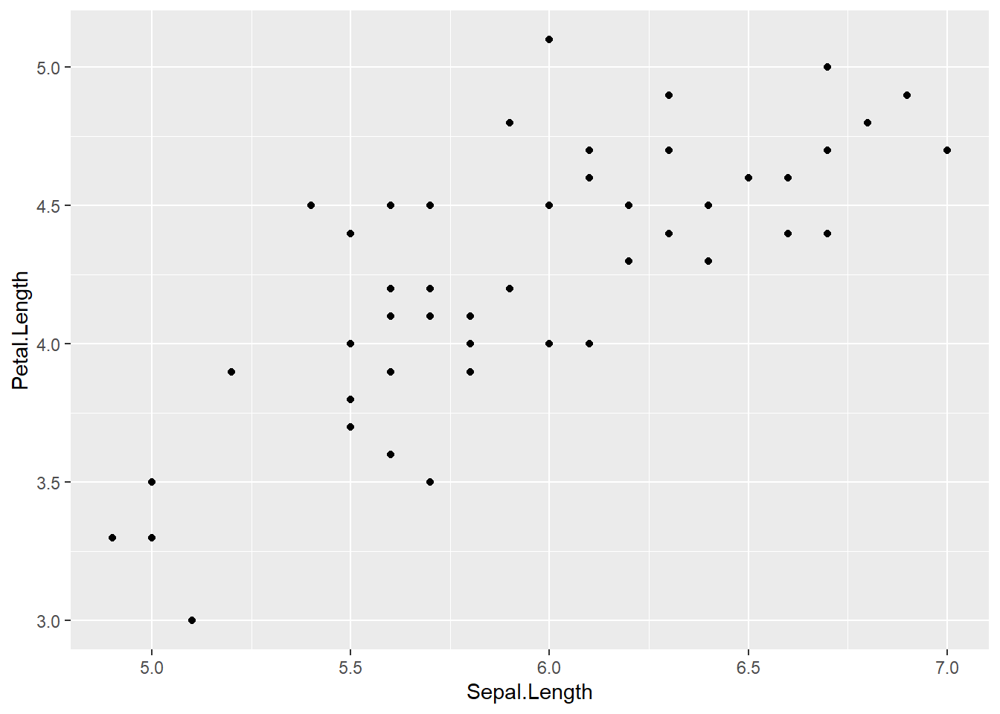
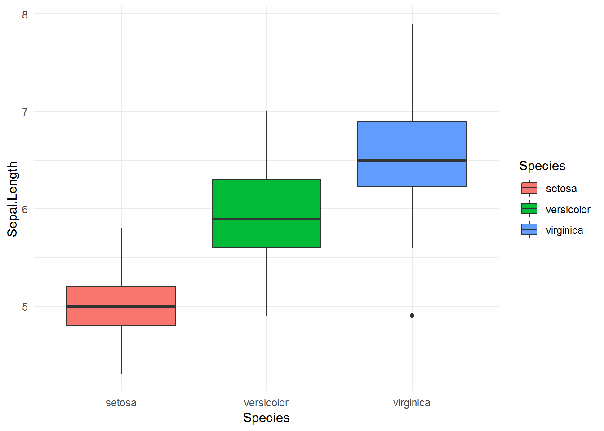
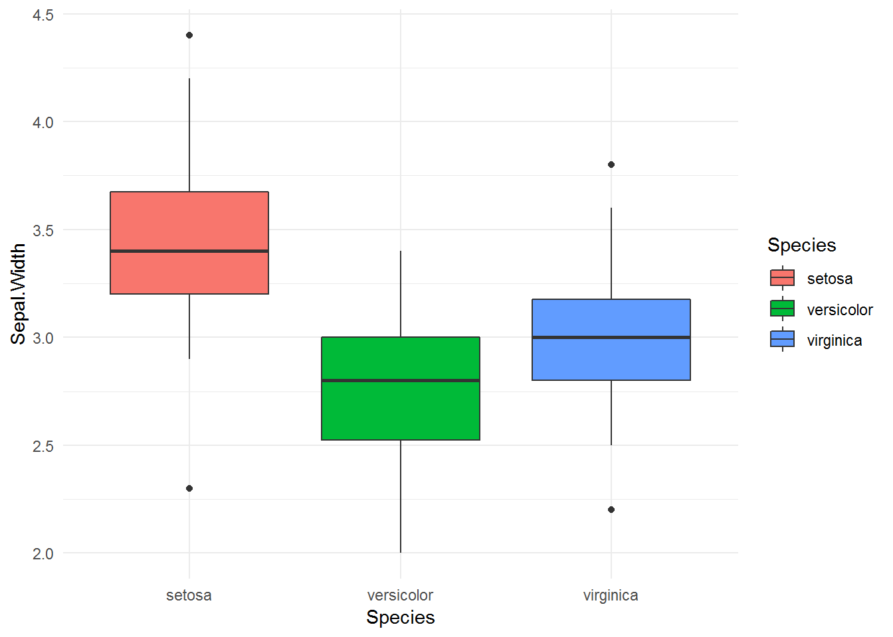

Chương 6 Lập trình chức năng hàm với purrr
Khi phân tích dữ liệu phức tạp, ta thường xuyên phải thực hiện một nhóm các phân tích tương tự nhau cho các nhóm dữ liệu khác nhau. Việc sử dụng các hàm làm đơn vị thao tác cơ bản và phối hợp các hàm với nhau được gọi là lập trình chức năng hàm (functional programming). Để đơn giản, ta xét ví dụ sau.
Sử dụng tập dữ liệu iris, với mỗi nhóm của Species, xây dựng mô hình hồi quy giữa Sepal.Length và Petal.Length, so sánh giá trị r.squared giữa các mô hình.
Với cách làm thông thường, ta sẽ phải thức hiện theo thứ tự sau:
- Tạo các data.frame cho từng giá trị của Species
- Với mỗi data.frame vừa tạo, xây dựng mô hình
lm - Với mỗi mô hình vừa tạo, chiết xuất giá trị
r.squaredvà lưu vào một data.frame
Cách triển khai trên có thể sử dụng vòng lặp trong R với phương án như sau
library(dplyr)
library(purrr)
category <- iris$Species %>% levels %>% as.character()
model_result <- data.frame()
for (i in category){
df <- iris %>% filter(Species == i)
model <- lm(Sepal.Length ~ Sepal.Width, data = df)
model_summary <- summary(model)
df_temp <- data.frame(species = i,
r.square = model_summary$r.squared)
model_result <- bind_rows(model_result, df_temp)
}Tuy nhiên, với lập trình chức năng hàm, ta có thể làm rất đơn giản như sau.
library(purrr)
iris %>%
split(.$Species) %>%
map(~lm(Sepal.Length ~ Sepal.Width, data = .)) %>%
map(summary) %>%
map_dbl("r.squared")## setosa versicolor virginica
## 0.5513756 0.2765821 0.2090573Trong chương này, chúng ta sẽ tìm hiểu các cách thức cơ bản lập trình chức năng hàm với R qua package purrr. Việc nắm vững kiến thức và kỹ năng lập trình hàm có rất nhiều ứng dụng trong công việc phân tích, giúp giảm thiểu rất lớn thời gian phân tích, làm cho quá trình phân tích mạch lạc hơn rất nhiều trong các bài toán khám phá dữ liệu
6.1 Nhóm hàm map
Công thức tổng quát của nhóm hàm map
map(.x, .f, ...)Giải thích: Với mỗi giá trị của .x, thực hiện .f. Trong đó, x là một list.
Hàm map làm hàm tổng quát, ngoài ra, map còn có các biến thể chính sau
| Câu lệnh | Kết quả |
|---|---|
map |
list |
map_dbl |
vector dạng double |
map_int |
vector dạng int |
map_chr |
vector dạng character |
map_df |
data.frame |
# Dạng list
iris %>% map(class)## $Sepal.Length
## [1] "numeric"
##
## $Sepal.Width
## [1] "numeric"
##
## $Petal.Length
## [1] "numeric"
##
## $Petal.Width
## [1] "numeric"
##
## $Species
## [1] "factor"# Dạng char
iris %>% map_chr(class)## Sepal.Length Sepal.Width Petal.Length Petal.Width Species
## "numeric" "numeric" "numeric" "numeric" "factor"# Dạng data.frame
iris %>% map_df(class)## # A tibble: 1 x 5
## Sepal.Length Sepal.Width Petal.Length Petal.Width Species
## <chr> <chr> <chr> <chr> <chr>
## 1 numeric numeric numeric numeric factorMap theo điều kiện với map_if và map_at
Tương tự với map, nhóm map_if và map_at cho phép tính toán theo điều kiện hoặc vị trí của list. Xem ví dụ sau.
# map_if
iris %>%
map_if(is.numeric, as.character) %>%
as.data.frame %>%
str## 'data.frame': 150 obs. of 5 variables:
## $ Sepal.Length: Factor w/ 35 levels "4.3","4.4","4.5",..: 9 7 5 4 8 12 4 8 2 7 ...
## $ Sepal.Width : Factor w/ 23 levels "2","2.2","2.3",..: 15 10 12 11 16 19 14 14 9 11 ...
## $ Petal.Length: Factor w/ 43 levels "1","1.1","1.2",..: 5 5 4 6 5 8 5 6 5 6 ...
## $ Petal.Width : Factor w/ 22 levels "0.1","0.2","0.3",..: 2 2 2 2 2 4 3 2 2 1 ...
## $ Species : Factor w/ 3 levels "setosa","versicolor",..: 1 1 1 1 1 1 1 1 1 1 ...# map_at
iris %>%
map_at(c(1,2), as.character) %>%
str## List of 5
## $ Sepal.Length: chr [1:150] "5.1" "4.9" "4.7" "4.6" ...
## $ Sepal.Width : chr [1:150] "3.5" "3" "3.2" "3.1" ...
## $ Petal.Length: num [1:150] 1.4 1.4 1.3 1.5 1.4 1.7 1.4 1.5 1.4 1.5 ...
## $ Petal.Width : num [1:150] 0.2 0.2 0.2 0.2 0.2 0.4 0.3 0.2 0.2 0.1 ...
## $ Species : Factor w/ 3 levels "setosa","versicolor",..: 1 1 1 1 1 1 1 1 1 1 ...Lưu ý: Với trường hợp có hai biến đầu vào, có thể sử dụng nhóm hàm map2. Ví dụ
# Không chạy
map_dbl(1:3, 4:6, sum)map2_dbl(1:3, 4:6, sum)## [1] 5 7 9Với các trường hợp phức tạp, ta cần vận dụng linh hoạt.
Ví dụ: Với mỗi dòng trong iris , tách thành dataframe riêng và xoay chiều dữ liêu. Tên các cột trở thành biến attribute, giá trị các cột trở thành biến value.
library(tidyverse)
get_data <- function(data, i){
df <- data %>%
slice(i) %>% t %>%
as.data.frame
result <- data.frame(attribute = rownames(df),
value = df[,1])
rownames(result) <- NULL
return(result)
}
get_data(mtcars, 3)## attribute value
## 1 mpg 22.80
## 2 cyl 4.00
## 3 disp 108.00
## 4 hp 93.00
## 5 drat 3.85
## 6 wt 2.32
## 7 qsec 18.61
## 8 vs 1.00
## 9 am 1.00
## 10 gear 4.00
## 11 carb 1.00get_data(iris, 1)## attribute value
## 1 Sepal.Length 5.1
## 2 Sepal.Width 3.5
## 3 Petal.Length 1.4
## 4 Petal.Width 0.2
## 5 Species setosamap2(replicate(3, iris, simplify = F),
c(1:3), get_data)## [[1]]
## attribute value
## 1 Sepal.Length 5.1
## 2 Sepal.Width 3.5
## 3 Petal.Length 1.4
## 4 Petal.Width 0.2
## 5 Species setosa
##
## [[2]]
## attribute value
## 1 Sepal.Length 4.9
## 2 Sepal.Width 3
## 3 Petal.Length 1.4
## 4 Petal.Width 0.2
## 5 Species setosa
##
## [[3]]
## attribute value
## 1 Sepal.Length 4.7
## 2 Sepal.Width 3.2
## 3 Petal.Length 1.3
## 4 Petal.Width 0.2
## 5 Species setosa6.2 Sửa đổi giá trị với modify
Tương tự như map, modify cho áp dụng hàm vào một nhóm các list. Tuy nhiên, khác với map, modify cho ra kết quả với cấu trúc dữ liệu ban đâu.
# map đổi cấu trúc của dataframe
iris %>%
map_if(is.factor, as.character) %>%
str## List of 5
## $ Sepal.Length: num [1:150] 5.1 4.9 4.7 4.6 5 5.4 4.6 5 4.4 4.9 ...
## $ Sepal.Width : num [1:150] 3.5 3 3.2 3.1 3.6 3.9 3.4 3.4 2.9 3.1 ...
## $ Petal.Length: num [1:150] 1.4 1.4 1.3 1.5 1.4 1.7 1.4 1.5 1.4 1.5 ...
## $ Petal.Width : num [1:150] 0.2 0.2 0.2 0.2 0.2 0.4 0.3 0.2 0.2 0.1 ...
## $ Species : chr [1:150] "setosa" "setosa" "setosa" "setosa" ...# modify giữ nguyên cấu trúc
iris %>%
modify_if(is.factor, as.character) %>%
str## 'data.frame': 150 obs. of 5 variables:
## $ Sepal.Length: num 5.1 4.9 4.7 4.6 5 5.4 4.6 5 4.4 4.9 ...
## $ Sepal.Width : num 3.5 3 3.2 3.1 3.6 3.9 3.4 3.4 2.9 3.1 ...
## $ Petal.Length: num 1.4 1.4 1.3 1.5 1.4 1.7 1.4 1.5 1.4 1.5 ...
## $ Petal.Width : num 0.2 0.2 0.2 0.2 0.2 0.4 0.3 0.2 0.2 0.1 ...
## $ Species : chr "setosa" "setosa" "setosa" "setosa" ...6.3 Tạo hàm nhanh với as_mapper
as_mapper cho phép tạo hàm nhanh, đặc biệt hữu ích khi ta chỉ muốn tạo và sử dụng một hàm trong một vài trường hợp đặc biệt.
Công thức tổng quát
# Với một tham số
as_mapper(~f(.x))
# Với hai tham số
as_mapper(f(.x, .y))Xem các ví dụ sau:
# Cộng 10 vào mỗi giá trị
map_dbl(1:3, ~ .x+10)## [1] 11 12 13# Cộng hai vector với nhau
map2_dbl(1:3, 5:7, ~.x + .y)## [1] 6 8 10# Cách viết khác
map2_dbl(1:3, 5:7, as_mapper(~.x + .y))## [1] 6 8 106.4 Xây dựng chuỗi các hàm liên tiếp với compose
Hàm compose cho phép kết hợp nhiều hàm với nhau với hàm ở bên phải là input đầu vào cho hàm bên trái. Cấu trúc như sau.
compose(f_2, f_1)
# Tương đương với
argument %>% f_2 %>% f_1Xem ví dụ sau:
library(tidyverse)
library(broom)
lm(Sepal.Length ~ Sepal.Width, data = iris) %>%
tidy## # A tibble: 2 x 5
## term estimate std.error statistic p.value
## <chr> <dbl> <dbl> <dbl> <dbl>
## 1 (Intercept) 6.53 0.479 13.6 6.47e-28
## 2 Sepal.Width -0.223 0.155 -1.44 1.52e- 1Cách viết trên có thể thay thế như sau
tidy_lm <- compose(tidy, lm)
tidy_lm(Sepal.Length ~ Sepal.Width, data = iris)## # A tibble: 2 x 5
## term estimate std.error statistic p.value
## <chr> <dbl> <dbl> <dbl> <dbl>
## 1 (Intercept) 6.53 0.479 13.6 6.47e-28
## 2 Sepal.Width -0.223 0.155 -1.44 1.52e- 1Ta có thể thêm các nhóm hàm khác đi cùng với compose như filter
my_func <- compose(
as_mapper(~filter(.x, p.value < 0.05)),
tidy,
lm)
my_func(Sepal.Length ~ Sepal.Width, data = iris)## # A tibble: 1 x 5
## term estimate std.error statistic p.value
## <chr> <dbl> <dbl> <dbl> <dbl>
## 1 (Intercept) 6.53 0.479 13.6 6.47e-286.5 Ứng dụng
6.5.1 Biến đổi dữ liệu với modify và map_df
Khi phân tích dữ liệu, đôi khi ta cần chuẩn hóa dữ liệu cho tất cả các biến numeric trong data.frame. Với nhóm hàm của purrr, ta có thể thực hiện như sau
# Tạo hàm
standardize_data <- function(x){
x <- (x - min(x))/(max(x) - min(x))
return(x)
}
# Sử dụng map_df
df <- iris
df[, 1:4] <- df[, 1:4] %>% map_df(standardize_data)
df %>% head## Sepal.Length Sepal.Width Petal.Length Petal.Width Species
## 1 0.22222222 0.6250000 0.06779661 0.04166667 setosa
## 2 0.16666667 0.4166667 0.06779661 0.04166667 setosa
## 3 0.11111111 0.5000000 0.05084746 0.04166667 setosa
## 4 0.08333333 0.4583333 0.08474576 0.04166667 setosa
## 5 0.19444444 0.6666667 0.06779661 0.04166667 setosa
## 6 0.30555556 0.7916667 0.11864407 0.12500000 setosa# Sử dụng modify
# Sử dụng map_df
df <- iris
df <- df %>% modify_if(is.numeric, standardize_data)
df %>% head## Sepal.Length Sepal.Width Petal.Length Petal.Width Species
## 1 0.22222222 0.6250000 0.06779661 0.04166667 setosa
## 2 0.16666667 0.4166667 0.06779661 0.04166667 setosa
## 3 0.11111111 0.5000000 0.05084746 0.04166667 setosa
## 4 0.08333333 0.4583333 0.08474576 0.04166667 setosa
## 5 0.19444444 0.6666667 0.06779661 0.04166667 setosa
## 6 0.30555556 0.7916667 0.11864407 0.12500000 setosa6.5.2 Phân tích nhiều nhóm khác nhau cùng lúc
Khi phân tích dữ liệu, đôi khi ta muốn xây dựng chuẩn phân tích dữ liệu qua một số bước, bao gồm:
- Tính toán các chỉ số thống kê
- Vẽ đồ thị
- Xây dụng mô hình đơn giản
Quy trình này sẽ không gặp vấn đề khi ta chỉ phải xử lý với một nhóm nhỏ dữ liệu. Khi số lượng nhóm tăng lên, việc phân tích dữ liệu trở nên khó khăn hơn rất nhiều và tốn thời gian. Tuy nhiên, với purrr, các vấn đề này trở nên rất đơn giản.
Ví dụ: Với mỗi nhóm của Species trong tập dữ liệu iris:
- Tổng hơp dữ liệu
- Vẽ đồ thị điểm giữa Sepal.Length vs. Petal.Length
- Xây dựng mô hình hồi quy Sepal.Length ~ Petal.Length
library(tidyverse)
# Bước một: Xây dựng hàm
my_stat <- function(data){
print("Summary data")
print("====================")
summary(data) %>% print
p <- data %>%
ggplot(aes(Sepal.Length, Petal.Length)) +
geom_point()
print("Summary model")
print("====================")
model <- lm(Sepal.Length ~ Petal.Length, data = data)
summary(model) %>% print
p %>% print
}
# Test hàm
my_stat(iris)## [1] "Summary data"
## [1] "===================="
## Sepal.Length Sepal.Width Petal.Length Petal.Width
## Min. :4.300 Min. :2.000 Min. :1.000 Min. :0.100
## 1st Qu.:5.100 1st Qu.:2.800 1st Qu.:1.600 1st Qu.:0.300
## Median :5.800 Median :3.000 Median :4.350 Median :1.300
## Mean :5.843 Mean :3.057 Mean :3.758 Mean :1.199
## 3rd Qu.:6.400 3rd Qu.:3.300 3rd Qu.:5.100 3rd Qu.:1.800
## Max. :7.900 Max. :4.400 Max. :6.900 Max. :2.500
## Species
## setosa :50
## versicolor:50
## virginica :50
##
##
##
## [1] "Summary model"
## [1] "===================="
##
## Call:
## lm(formula = Sepal.Length ~ Petal.Length, data = data)
##
## Residuals:
## Min 1Q Median 3Q Max
## -1.24675 -0.29657 -0.01515 0.27676 1.00269
##
## Coefficients:
## Estimate Std. Error t value Pr(>|t|)
## (Intercept) 4.30660 0.07839 54.94 <2e-16 ***
## Petal.Length 0.40892 0.01889 21.65 <2e-16 ***
## ---
## Signif. codes: 0 '***' 0.001 '**' 0.01 '*' 0.05 '.' 0.1 ' ' 1
##
## Residual standard error: 0.4071 on 148 degrees of freedom
## Multiple R-squared: 0.76, Adjusted R-squared: 0.7583
## F-statistic: 468.6 on 1 and 148 DF, p-value: < 2.2e-16
# Bước 2: Xây dựng map
iris$Species %>%
unique %>%
map(function(value){
print(paste0("Analysis of ", value))
iris %>%
filter(Species == value) %>%
my_stat
})## [1] "Analysis of setosa"
## [1] "Summary data"
## [1] "===================="
## Sepal.Length Sepal.Width Petal.Length Petal.Width
## Min. :4.300 Min. :2.300 Min. :1.000 Min. :0.100
## 1st Qu.:4.800 1st Qu.:3.200 1st Qu.:1.400 1st Qu.:0.200
## Median :5.000 Median :3.400 Median :1.500 Median :0.200
## Mean :5.006 Mean :3.428 Mean :1.462 Mean :0.246
## 3rd Qu.:5.200 3rd Qu.:3.675 3rd Qu.:1.575 3rd Qu.:0.300
## Max. :5.800 Max. :4.400 Max. :1.900 Max. :0.600
## Species
## setosa :50
## versicolor: 0
## virginica : 0
##
##
##
## [1] "Summary model"
## [1] "===================="
##
## Call:
## lm(formula = Sepal.Length ~ Petal.Length, data = data)
##
## Residuals:
## Min 1Q Median 3Q Max
## -0.57238 -0.20671 -0.03084 0.17339 0.93608
##
## Coefficients:
## Estimate Std. Error t value Pr(>|t|)
## (Intercept) 4.2132 0.4156 10.138 1.61e-13 ***
## Petal.Length 0.5423 0.2823 1.921 0.0607 .
## ---
## Signif. codes: 0 '***' 0.001 '**' 0.01 '*' 0.05 '.' 0.1 ' ' 1
##
## Residual standard error: 0.3432 on 48 degrees of freedom
## Multiple R-squared: 0.07138, Adjusted R-squared: 0.05204
## F-statistic: 3.69 on 1 and 48 DF, p-value: 0.0607
## [1] "Analysis of versicolor"
## [1] "Summary data"
## [1] "===================="
## Sepal.Length Sepal.Width Petal.Length Petal.Width
## Min. :4.900 Min. :2.000 Min. :3.00 Min. :1.000
## 1st Qu.:5.600 1st Qu.:2.525 1st Qu.:4.00 1st Qu.:1.200
## Median :5.900 Median :2.800 Median :4.35 Median :1.300
## Mean :5.936 Mean :2.770 Mean :4.26 Mean :1.326
## 3rd Qu.:6.300 3rd Qu.:3.000 3rd Qu.:4.60 3rd Qu.:1.500
## Max. :7.000 Max. :3.400 Max. :5.10 Max. :1.800
## Species
## setosa : 0
## versicolor:50
## virginica : 0
##
##
##
## [1] "Summary model"
## [1] "===================="
##
## Call:
## lm(formula = Sepal.Length ~ Petal.Length, data = data)
##
## Residuals:
## Min 1Q Median 3Q Max
## -0.73479 -0.20272 -0.02065 0.26092 0.69956
##
## Coefficients:
## Estimate Std. Error t value Pr(>|t|)
## (Intercept) 2.4075 0.4463 5.395 2.08e-06 ***
## Petal.Length 0.8283 0.1041 7.954 2.59e-10 ***
## ---
## Signif. codes: 0 '***' 0.001 '**' 0.01 '*' 0.05 '.' 0.1 ' ' 1
##
## Residual standard error: 0.3425 on 48 degrees of freedom
## Multiple R-squared: 0.5686, Adjusted R-squared: 0.5596
## F-statistic: 63.26 on 1 and 48 DF, p-value: 2.586e-10
## [1] "Analysis of virginica"
## [1] "Summary data"
## [1] "===================="
## Sepal.Length Sepal.Width Petal.Length Petal.Width
## Min. :4.900 Min. :2.200 Min. :4.500 Min. :1.400
## 1st Qu.:6.225 1st Qu.:2.800 1st Qu.:5.100 1st Qu.:1.800
## Median :6.500 Median :3.000 Median :5.550 Median :2.000
## Mean :6.588 Mean :2.974 Mean :5.552 Mean :2.026
## 3rd Qu.:6.900 3rd Qu.:3.175 3rd Qu.:5.875 3rd Qu.:2.300
## Max. :7.900 Max. :3.800 Max. :6.900 Max. :2.500
## Species
## setosa : 0
## versicolor: 0
## virginica :50
##
##
##
## [1] "Summary model"
## [1] "===================="
##
## Call:
## lm(formula = Sepal.Length ~ Petal.Length, data = data)
##
## Residuals:
## Min 1Q Median 3Q Max
## -0.73409 -0.23643 -0.03132 0.23771 0.76207
##
## Coefficients:
## Estimate Std. Error t value Pr(>|t|)
## (Intercept) 1.05966 0.46677 2.27 0.0277 *
## Petal.Length 0.99574 0.08367 11.90 6.3e-16 ***
## ---
## Signif. codes: 0 '***' 0.001 '**' 0.01 '*' 0.05 '.' 0.1 ' ' 1
##
## Residual standard error: 0.3232 on 48 degrees of freedom
## Multiple R-squared: 0.7469, Adjusted R-squared: 0.7416
## F-statistic: 141.6 on 1 and 48 DF, p-value: 6.298e-16
## [[1]]
##
## [[2]]
##
## [[3]]
6.5.3 Phân tích nhiều biến trong dataframe cùng lúc
Một biên thể khác của map là sử dụng trong phân tích cùng lúc nhiều biến số với một biến thuộc dạng nhóm (group). Khi lập trình với NSE, ta cần phải sử dụng hàm syms() trước khi map
Ví dụ: Với mỗi biến số trong tập dữ liệu iris:
- So sánh giá trị trung bình của biến này với các nhóm khác nhau của
Species - Vẽ biểu đồ boxplot
library(tidyverse)
# Bước 1: Xây dựng hàm
my_stat <- function(x){
x <- enquo(x)
iris %>%
group_by(Species) %>%
summarise(mean = mean(!!x)) %>%
print
iris %>%
ggplot(aes(Species, !!x)) +
geom_boxplot(aes(fill = Species)) +
theme_minimal()
}
my_stat(Sepal.Length)## # A tibble: 3 x 2
## Species mean
## <fct> <dbl>
## 1 setosa 5.01
## 2 versicolor 5.94
## 3 virginica 6.59
# Bước 2: Dùng map
iris %>%
select_if(is.numeric) %>%
names %>%
syms %>%
map(my_stat)## # A tibble: 3 x 2
## Species mean
## <fct> <dbl>
## 1 setosa 5.01
## 2 versicolor 5.94
## 3 virginica 6.59
## # A tibble: 3 x 2
## Species mean
## <fct> <dbl>
## 1 setosa 3.43
## 2 versicolor 2.77
## 3 virginica 2.97
## # A tibble: 3 x 2
## Species mean
## <fct> <dbl>
## 1 setosa 1.46
## 2 versicolor 4.26
## 3 virginica 5.55
## # A tibble: 3 x 2
## Species mean
## <fct> <dbl>
## 1 setosa 0.246
## 2 versicolor 1.33
## 3 virginica 2.03## [[1]]
##
## [[2]]
##
## [[3]]
##
## [[4]]
Lưu ý: Việc ứng dụng purrr với các hàm tính toán thống kê sẽ cho phép phân tích khám phá dữ liệu hàng loạt